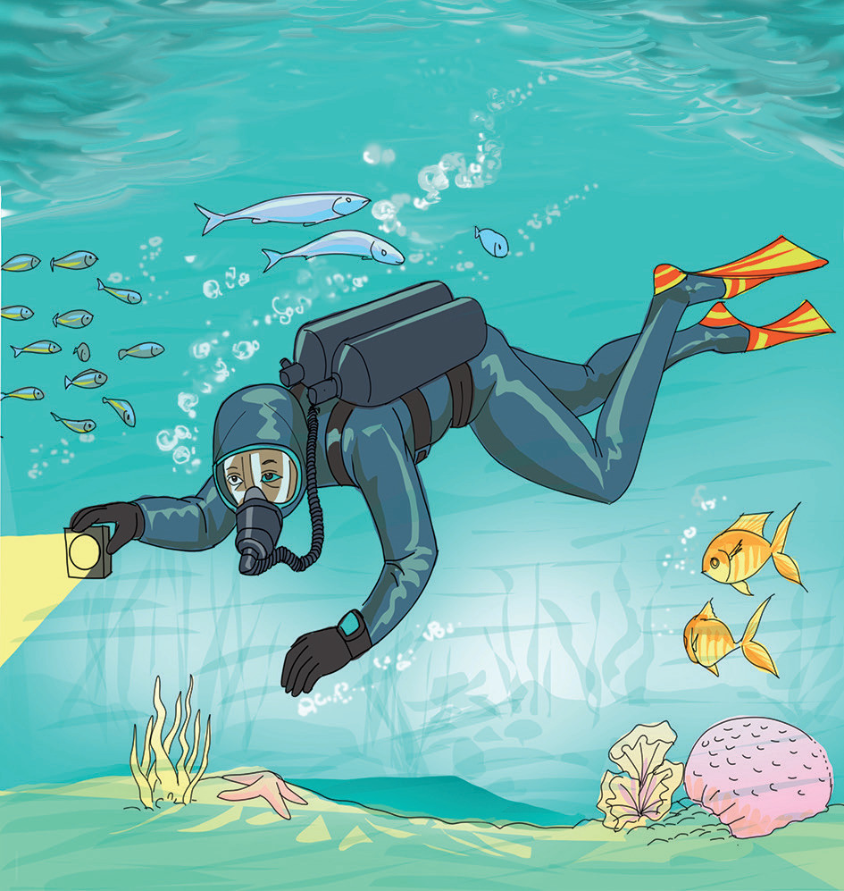

(f)

2.
Read the following statements carefully, then group them into branches of Geography:
(a)Studying the behaviour of stars in the sky.
(b)Analysis of population structure and migration.
(c)Studying about manufacturing industry in Tanzania.
(d)Understanding physical features and their change in time and space.
3.
Mention two geographical techniques that help geographers to conduct their practical work.
4.
Explain how geographical knowledge influences people’s settlements.
9